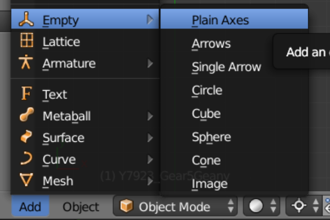
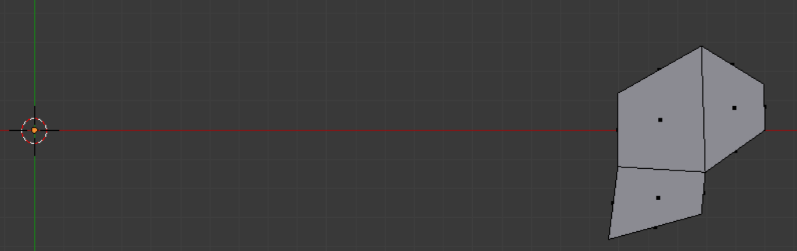
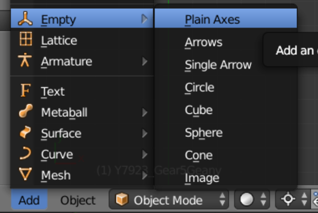
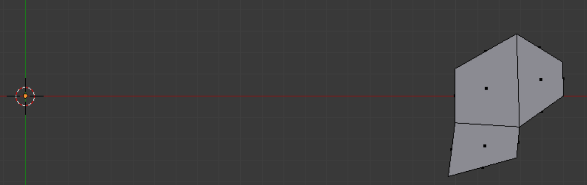

Demo 12
This object is a ring gear; the model can be found in the INRIA model repository as an .obj file, and is imported into Blender with Blender ’ s .obj import script. Its title is “Y7923” (See References). The Limited Dissolve command is ineffective on such a simple model. An object like this is often divided when stresses are analyzed; however, in this case we will assume that we want to look at the whole object at once.
This object is a ring gear; the model can be found in the INRIA model repository as an .obj file, and is imported into Blender with Blender ’ s .obj import script. Its title is “Y7923” (See References). The Limited Dissolve command is ineffective on such a simple model. An object like this is often divided when stresses are analyzed; however, in this case we will assume that we want to look at the whole object at once.
Fifty equally sized inside edges make a circle with diameter of 400. Everything is deleted except a generating plate. Member quads are created which contain the best-sized angles, which happens to make a very simple design. It includes two inside edges, so we will need to call for 25 array instances.
We will use a different array modifier technique than we used in Demo 11.
 



We extrude the plate to get a generating chunk. The object origin has remained at the world center, where the 3D cursor is also located.
We add an empty there as well, in Object mode, using the above menu.
We add an empty there as well, in Object mode, using the above menu.
The Object panel for the empty is shown right. It is necessary to parent the empty to the chunk before assigning the array modifier to the chunk. The empty is pre-rotated according to the needs of the generating body (the chunk). Since the array rotation is desired around the z-axis, it would seem logical to rotate the empty around this axis. However, we rotate the empty around the axis which produces the desired orientation of generation, determined by experiment, and in this case it turns out to be the y-axis. (The sign on the rotation of the empty does not seem to matter.)
The Modifier panel for the chunk is shown right. The offset method that is chosen is Object Offset, as we see. The Merge and First Last checkboxes are intended to provide continuity and avoid doubles. However, at the end of the operation the Remove Doubles command still removes eight doubles.
The generated ring after the Apply button has been pressed is shown left in Edit mode. However, it is not strictly necessary to press the Apply button.
We go on to export the mesh. If for some reason we did not wish to officially Apply the array modifier, we could still export all the generated geometry by selecting the Apply Modifiers checkbox in the export panel. On the other hand, if the Apply button has been pressed, there is no need to mark the checkbox.
The final mesh achieves a satisfactory score for Scaled Jacobian (right) as well as for Diagonal measure (below). It contains 1350 nodes and 600 elements.